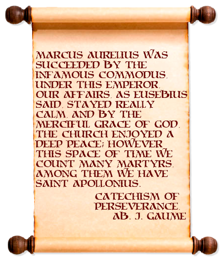
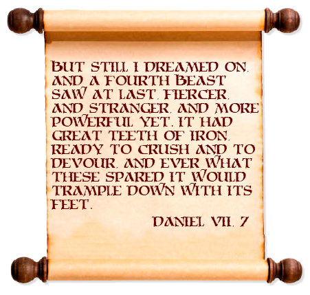
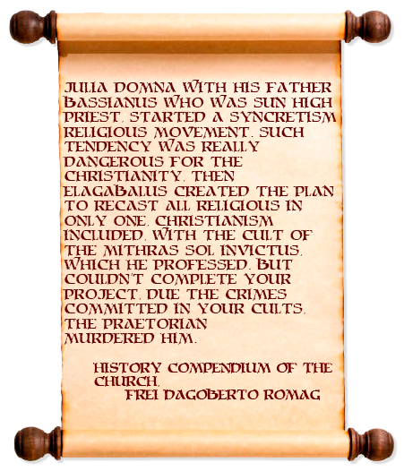
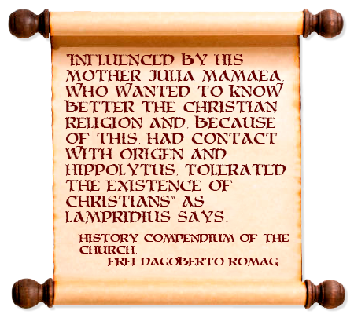
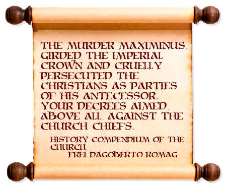
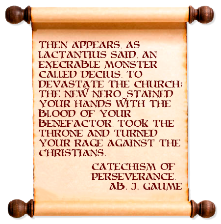
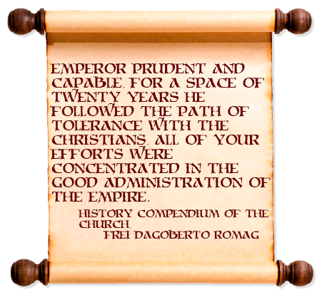
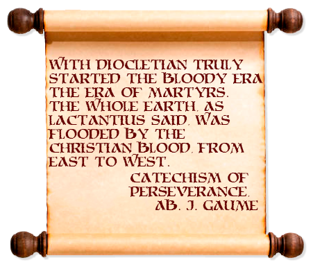

I. Our beginning - the end of Antonines
After Marcus Aurelius despotic act, commending his son Commodus to assume the empire, the enlightened era from Flavians and Antonines almost faced its destruction as though everything just not more than a dream.
Commodus was totally opposite of his father, he might be a good soldier but was a barbarian man with the most inappropriate behavior for an Augustus, he was hated for everyone, since the Senate and the people to their courtiers and lover. His fourteen years reign was a succession of three dictatorships lead by Perenis, Cleandro and Leto, the first and the third was from praetorian guard and the second was a chamberlain, meanwhile Commodus freed itself in gladiator games and any other debauchery.
This craziness needed to be stopped and was done by his lover Marcia, with poison, and by a gladiator who was called to the palace to fight with the emperor. It was a brutal death, being betrayed by his own passions.

A new blood run will occur after Commodus death in 192 anno domini, not quite different from what happened after the emperor Nero death but even more aggressive. Pertinax assumed the government between January and March of 193 being raised by the praetorian guard against your will, a military discipline enthusiast began a reasonable and restorative reign but was brutally murdered by the same praetorian guard who put him there.
The guards were just acting as mercenaries, the worst ones! The jurisconsult Didius Julianus saw this praetorian guard desire and used his wealth to buy them and take the empire, the soldiers praise and defend him while he gives them a bunch of drachmas, his government was ended by a murderer in July. Afterwards several legions with their generals claimed the empire for themselves, the Syrians raised Pescennius Niger, Britains Albinus and the Danubians Septimius Severus, the last one was victorious and entered Rome leading his troops.
- Commodus reign starts in 180 and ends 192
- After Commodus' death, starts the Year of the Five Emperors
- These events happened end of 192 and first semester of 193
- The praetorian guard and the militaries in general held a power to rise and down emperors
II. Septimus Severus rules the disorder
Septimius Severus was a brave and moderate african with an energetic character, he was the man who vengenced Pertinax, killing the haughty Didius Julianus and executing the traitors. The first things that he did when assumed power was killing a bunch of senators and aristocrats to consolidate his reign, having a government such as oriental despotism.
The new emperor was a great commander with several success military campaigns, won territory from Orient to Occident: wracking Byzantium; conquest Ctesiphon, the Parta capital; annexed Mesopotamia, marched in Gaul and in his last adventure in Britain against the Scotis he died in Iork on 211.

During his reign the militaries proeminence grew even more and this fact just sank the Romanitie deeper, the legions were full of foreigners such as Germans, Syrians, Africans, Arabs and so on. This miscellaneous inside the legions destroyed the old sense of Romanitie and they were there just for the war and loot, men completely corrupted and degenerated.
Septimius made the same mistake of Marcus Aurelius, commending his own sons as heir of the reign, Geta and Caracalla. The last paternal advice was very materialist and immoral, showing the decadence of this time: “Fill the soldier's bag and the other things don’t matter at all.”
- In this time of history started the Severan dynasty
- All the reign of Septimus occurs bettew 193 and 211
- Septimus Severus was a great conqueror
- The military caste growed, together with their degeneration
III. Severus dynasty trembles
Caracalla was given the name of Antoninus by his father, a way that the emperor found to show the Senate, legions and people the prestige of his son, but all the effort was null, his son after your death will show a true tyrannical reign and an inhuman character. Caracalla begins with a bloodbath killing your own brother Geta and all their partisans, afterwards flooding the troops with riches and privileges, then indulging in all the demagogic acts and gladiator’s games and challenges among beasts.
He delegates his mom, Julia Domna, the charge of government and administration. When Caracalla inebriates with his own passions, he desires to be a great conqueror, not like his father or Cesar, but the greatest like Alexander the Great of Macedon! Then he starts the march to Asia, but in the way the soldiers revolted and brutally kill him, there the troops raise Macrinus as emperor.
Macrinus had an ephemeral reign, the Severus family was already planning to put someone as Augustus. Julia Mesa, sister of Septimius’ widow, starts to vehiculate the name of Varius Avitus who was son of his daughter Julia Semias and priest of Baal, bonded with the name of Antoninus and as true son of Caracalla, won Macrinus and began his peculiar and controversial reign.
The yount adopted a new name according to his god, Elagabalus which means “creator god”, his triumphal entrance in Rome was full of mystic symbolism, the face painted full of gems and the raiment with purple and gold announces an idol. During four years Elagabalus surrenders for all debauchery, not for itself as related with other emperors, but in a mystical and ceremonial way which drove all the present on a frenzy. These awful events promoted by the emperor even shocked the religious and sexual morality of his time, in 222 the praetorians dilacerate Elagabalus and his mother, then a historic act was repeated with their corpses, they were dragged on the roads till be tossing on Tiber river…

Quickly Julia Mamaea, sister of Julia Semias, proclaims his son Alexander Severus with the help of her mother and they gatter success, the man was acclaimed by the praetorian and the people believed him.
- This time of history is inside the Severan dynasty
- This frame of history starts in 211 and ends in 222
- The empire had a sequence of three emperors, namely: Caracalla, Macrinus and Elagabalus
- Severan family’s women had a crucial role in the dynasty
- Elagabalus was one the most infamous emperors Rome could had
IV. Alexander Severus continues
Considering the whole background, Alexander was a man among few ones, he had a balance between intelligence and love for arts but didn't lose anything in the science of war, working with zealous, long-suffering and justice in their reign. He always said had more problems with their men than win their enemies, but with his mother and the important legist Ulpian as advisors, he started a bunch of reforms trying to change this and other problems in the empire.
He worked to restore the public finances, sanitation the civic/morale and improve the agriculture and industry, attempts to establish the power of the Senate and aristocrats and reduce the military influence on politics. Naturally, reform time with tranquility and equity are followed by constructions everywhere in the territory: bridges, aqueducts, roads and bathhouses are examples. It seems the good Antonines days returned with him.

Not so far the war comes with the Persian Ardashir invading mesopotamia wanting territories in Syria and Asia Minor, Alexander goes there and back with the victory. Meanwhile in the Gaul region some barbarian tribes saw the Rhine and Danubius unguarded then started an invasion, there the emperor went. In the battlefield he commits a blunder, advised by his mother, Alexander takes to the generals' table not a battle plan but a peace treaty bribing the barbarians and this didn’t take so long to form a insurgency. The legions declared Maximinus as emperor, invaded the tend of Alexander where was his mother too and killed both.
In 235 the Severus dynasty ended and the military anarchy was established as never seen before.
- This time of history is the end of Severan dynasty
- The reign of Alexander Severus starts in 222 and ends in 235
- Alexander was a good emperor, remembering Augustus' era
V. The military anarchy breakdown
The new emperor Maximinus was a tyrant, demanding high taxes from Rome just for endless battles in the western front and to enrich his mercenaries. As usual in the records of history, the Africans rose an emperor for themselves, Gordian I who annexed the title for his son Gordian II due to his advanced age. In 238 both perished by the Maximinus’ supporters.

Then the Senate tries to use his recent reformed power by Alexander Severus electing two emperors, Pupienus and Balbinus, the first goes face Maximinus who was murdered by his own troops in the process and, Pupienus returning to Rome, both the Senate’s emperors was murdered by the insane praetorian guard. The riot puts Gorgian III in rule of the empire, the youngest emperor made a great reign despite the circumstances of anarchy and invasions, he defended from the Persians and reconquered some territories including the whole Mesopotamia. But his destiny wasn’t different from the others, in 244 the guards murdered him after losing a battle in Persian invasion.
The praetorian prefect Philip the Arab assumed the empire, afraid with the government instabilities he made a shameless decision firming a peace treaty with Shapur the king of Persians, giving up the territories of Mesopotamia and maybe Armenia, being the first governor to withdraw territories in a treaty. In 249 Decius killed him and took the control, but this man had a short reign of two years dying in battle against the Goths.

The next two emperors didn't have more luck than their predecessor, Gallus and Aemilian died in the same year of 253 by the troops madness.
Valerian, with his son Gallienus as co-ruler for the west, assumed power for more time than the others, but all these instabilities could be seen outside by the empire enemies and they started a huge invasion, all the barbarians from the west flooded the Roman Europe and in the east the Goths and Persians invaded the roman dominations. The emperor, losing a battle against the Persians, was captured, made slave for a time and ripped out his skin as a trophy in 260, after the notice, several pretendents of the empire revolts against Gallienus, who ruled the empire after his father's death. He took the reign with a cultural and artistic reforms bias, was a good administrator and a brave governor but his end was not different than many others, being murdered by the soldiers in 268. Claudius Gothicus took his place and made good campaigns against the invaders, but his destiny was faded by a disease, dying in 270.
This period was full of instabilities for the Roman Empire: invasions from the barbarians and enemy reigns, political disorder, troops rebellion and internal revolts almost wrecked the whole empire putting an end in his history. This time the end was so near that the empire was divided by other rulers in independent areas, and were so many usurpers that they were called the Thirty Tyrants, despite the great number of them and the ephemeral existence of the most, I’ll approach the two most iconic and important.
The Gallic Empire with Postumus in 260 the whole roman dominances of Gaul and Germania was his and after Hispania and Britannia integrated this new empire. Odaenathus was the king who successfully defended the Persians and them declaring independence from Rome, in the same time of Gallic Empire roses the Palmyrene Empire, after your death his spouse Zenobia assumed the reign as regent and expanded the empire domain even to Egypt, she was a great ruler of your time. The Palmyrene Empire was really big, dominating Syria, Cilicia, Arabia, Cappadocia and Armenia.
In this whole sea of circumstances, the giant waves of catastrophes were followed by the impetuous winds of the bad fortunes, the colossal ship of Rome now is just a paper boat in the immeasurable Providence sea. It just needs a last captain, to right the watercraft or to finally bump it into the rocks.
- This time of history starts the Crisis of the Third Century
- Roman History is almost over there
- The empire had 13 emperors, from 235 to 270
VI. Iliric, the old Roman spectre
The Roman economy faces a real crisis of manpower in farm and industry and is accompanied with the oriental cults who quickly advance inside the society, breaking all the old morals and behavior. Domitius Aurelianus was the name that Rome needed, in 270 after the death of Claudius Gothicus and the quick Quintillus reign he assumed the power, a disciplined and severe leader who subjugated the empire’s enemies, one by one the internal and the external.
He made several conquests against the barbarians and ordered to building many fortifications in Rome and other Italian cities, then he launched a campaign to the east against the Palmyrene Empire. First Probus, a man at arms of the emperor, reconquest the Egypt and after Aurelianus cross the Dardanelles Strait and strike Zenobia troops in Ephesus, in 272 the emperor made a glorious entrance in Rome showing his special prisoner in chains of gold and giving to empire the restoration of it’s lands. Now it’s time for the Gallic Empire, winning Tetricus, the successor of Postumus, in 274 all the territories are back to Roman domain again, and Aurelianus was justly called restitutor orbis, the world restorer.
Your tremendous success came to his mind and consumed him, he wanted to be adored as a god but the unic god, for this he established the union of all the religions in one, the Sun. Aurelianus was the Sun to be adored, such in an Egyptian cult. Not late, in 275 going to the east against the Persians, your officials betray him and he dies for the troops.
Once again the fury of the soldiers are incited and Rome back to the shadow path of uncertainties, but even they tremble their legs of fear or hangover to go back an endless bloodbath.
- Crisis of the Third Century continues in Aurelianus' reign
- His reign dured only five years, from 270 to 275
- Aurelianus was recognized with the title restitutor orbis
VII. The military anarchy rerise
The soldiers refused to raise an emperor out of fear to put the man who killed Aurelianus, then the Senate assumed his old responsibility and elected Tacitus an old and venerable man. His quick reign was ended for a bad indication that he did, putting a violent relative in charge of the army that made the troops killing both, his brother Florian in the same year of 276 attempted to take the power as right of succession but was killed a few months after.
With the situation the soldiers felt the need to raise someone again to the throne, among the madness of them, Probus the Aurelianus' General, was enforced to it. Despite their menaces he denied over and over again, but at the end Probus accepted and warned that he’ll make them to be stern ruled, the soldiers didn’t care about the solemn advice and felt relief with the new emperor.
Probus as emperor gave to the soldiers that they wanted, wars. With the empire recently reunited, the barbarians wanted to invade it but they were pushed through Danube and Rhine, by these rivers he erected defensive lines that ensured the Hiberia and Gallia. All the Rome enemies respected again their power and armies.
Desirous to put an end to the endless battles, Probus starts several reconstruction works such as drains, plantations and repairs putting their men to do these strenuous works. These mercenaries only wanting battles and blood, soon murdered your emperor in 282, laying again the Rome destiny in the darkest shadow.
The praetorian guard prefect Carus assumed the reign, so discipline than Probus, started a campaign against the Persians with his son Numerian and put as Caesar the other son Carinus to hold the west. Your enemies didn’t resist him, but your fate was decided by a lightning taking your life in 283.
Numerian, still crying his father, was killed by his father-in-law and here our last character appears painted as hero, Diocletian vengeance Numerian and took the emperor title. But Carus first son is still Caesar and can legally be an Augustus, despite your laziness, he claimed the title, fought against Diocletian troops and won. However, while he was persecuting Diocletian flee troops, a soldier betrayed and killed him for vengeance because he had violated his wife.
Then in 284, Diocletian even losing the contest battle for Augustus, had won the Roman Empire.
- This time of history ends the Crisis of the Third Century
- The whole history occurs between 276 and 284
- Probus made a good government, reigning for 7 years
- 3 from the 7 emperors of this era was killed by the soldier's insanity
VIII. Diocletian and the tetrarchy
After the run against others empire pretendent, Diocletian assumed the whole empire. A humble origin man but full of ambition, his skepticism traces a line in front of what can do and cannot, vanishing any fresh illusions or pride acts. Nonetheless he has a dream and a really big dream, that will use his resolution and coldness, in continuing and complementing Augustus works!
Diocletian saw two huge problems, the defense of territory and the stability of the ruler to rule. He realized the idea to split the power with another ruler, easing the weight of governing a huge empire, and took the precedent from Valerian and his son Gallienus, where this emperor made the decision to splice the power with his son, then ruling the east and Gallienus the west. The emperor followed this path but structuring the system better.

Soon in 286 he put Maximian as your co-emperor to rule the west, a really experienced man of war and trustable for the job, so trustable that the mentor looked like the main ruler even in this dual system. However, the diarchy seems not enough for Diocletian and in 293 he imagined a more partitioned way of government: he as Augustus of east and Maximian of west, includes one Caesar for both as emperor adjunct: Galerius for him and Constantius I for Maximian. Urging the Tetrarchy system.
Diocletian was a real genius appointing them, the four rulers were complementary to each other. He, a mighty mind with a holistic sight, had Galerius as Caesar who is a rude and brave man at arms. The Augustus of the west is a rude and brave soldier either, had Constantius Chlorus a man with fine culture and good insight. The territory was sliced in four, one for each ruler and Rome just sat as an old glory monument.
The four capitals was strategic positioned in critical border points, Augustus Diocletian in Nicomedia at Asia Minor; Augustus Maximian in Milan at North of Italy; Caesar Galerius in Sirmium front of Danubius and Caesar Constantius Chlorus in Trier front of Rhine.
At this point our main character feels the borders of can and cannot expanded miles away, then he establishes a solid and complicated absolutism sounding like the ancient Egyptian system, giving him a uniqueness mark among the other rulers. Taking the name of Jupyter, he surrounds himself with rigid protocols giving a mystic, respect and fear climate.
Always acting foot by foot, Diocletian also limited the praetorian influence, putting among them many Iliric soldiers of your confidence. Not only that, he reduced their functions and separated them far from each barracks. But only infiltrating, separating and neutralizing them may cause a bad idea and ignites the flame of anarchy, for this he introduced a complex hierarchy system with large and good mensured rewards and titles followed by special rights.
The new type of government proved itself in all areas, even marching against the enemies the empire was able to establish serious and main reforms. One of them was the consistorium, aiming the consilium principis of Augustus but totally autocratic. Another was the so-called dioceses, a way to divide the whole empire in small territories for administrative purposes, setting a hundred of it, easing to govern and control the whole territory.
These huge reforms demanded too much of the economy and public finances, naturally growing the inflation of the prices from one side and the government raising the tributes in general from the other. The economy was so chaotic that Diocletian established an edict to control the prices, tabulating the price of everything in the empire and obviously this attempt just failed, skidding even more the situation.
All the success was noted in the conquests either: the german tribes was tossing from the other side of Rhine river; Galerius made an epic campaign against the Persians, dominating vast territories beyond the Euphrates and reconquesting Armenia; Constantius Chlorus made your name subjugating the Britain for the empire and the North of Africa and Egypt the roman armies dominates.
- Diocletian puts an end in the empire’s problems
- The empire was partitioned in four, for a pair of Augustus and Caesars
- Diocletian made a way to be venerated as main ruler, despite the others so ruler than him
- Diocletian is considered for some historians like Julius Caesar Augustus
- The tetrarchy was a success, ensuring stability and progress
IX. The last and bloodiest persecution
Diocletian's plan surpassed the whole problems and made important progress: extinguishing the anarchy, gave a new stability to the government, created new administrative structures and all of this formed by effective new methods. But one thing stains this entire beautiful picture of reconstruction: the reestablishment of Christian persecution.
In the last decades - especially after Gallienus’ edict in 261 ordering the interruption of process against the Christians and the devolution of yours confiscated stuffs - the Christianity lived in a restricted peace shutted up by small and local tyranny time or another, this situation made possible the growing of the Church multiplying their members. The Diocletian autocracy sooner or later will shock with the Christ Doctrine.
His totalitarianism configured in laws compels all the people to venerate and give sacrifices to the official gods and, of course, the emperor. The Christian intransigence, followed by the hatred and incentive of Galerius, made Diocletianus’ mind, but the ignite was to see among the troops Christian adepts and then started in 303 a vigorous and ruthless persecution against the Church. This was the most systemic, brutal and even the last persecution, but so chaotic and useless than the others.

Galerius, after your conquests against the Persians, felt better than anyone and disdains the Caesar title, passing to intimidate the Augustus Maximian. An illness takes Diocletian where his son-in-law, nothing less Galerius, insists repeatedly to his retirement and he does it but requesting that Maximian does the same. In 305, against your will, Maximian was kindly suggested to retire and left his title to Constantius Chlorus and Diocletian to Galerius, Maximinus Daza and Severus II were Caesars for their respective Augustus.
The hate against the Christians were severe in Maximian, but is not equipared with Galerius and Maximinus Daza. The east was filled with martyrs: everyday Galerius creates new torments; the virginity of Christian sisters was attacked as much as their faith and books, scrolls and any other registers are seeked to be destroyed, searching to erase the Church’s history. Meanwhile in the west of Constantius Chlorus the persecutions were even’t noted, the authorities are benign and righteous.
The Christians won their executioners with the patience, these persecutions by the empire and the rectitude of the persecuted incredibly opened the eyes for many people, aside the huge mass of baptized, they looked the Christians with respect and admiration for their superhuman reaction against the torture and death. Galerius despairs to win your weak enemies, but a devastating disease takes him in 311 and, fearful of being severely cursed by their God, passes an edict finishing the persecution and giving the right of existence.

- The last persecution starts in 303 and end in 311
- Galerius Valerius Maximianus was the bloodthirster persecutor
- The East Augustus shakes the tetrarchy stability, urging more pretenders for an absolute power
- Due a really severe disease, he ended the persecution and gave the right of existence to the Church